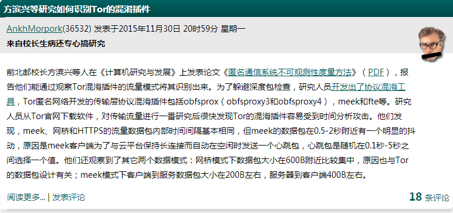
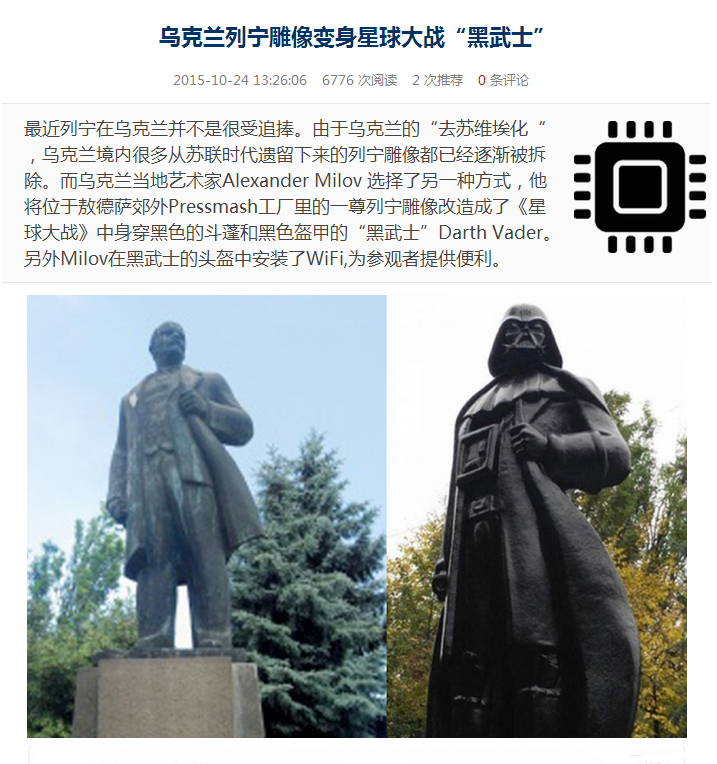
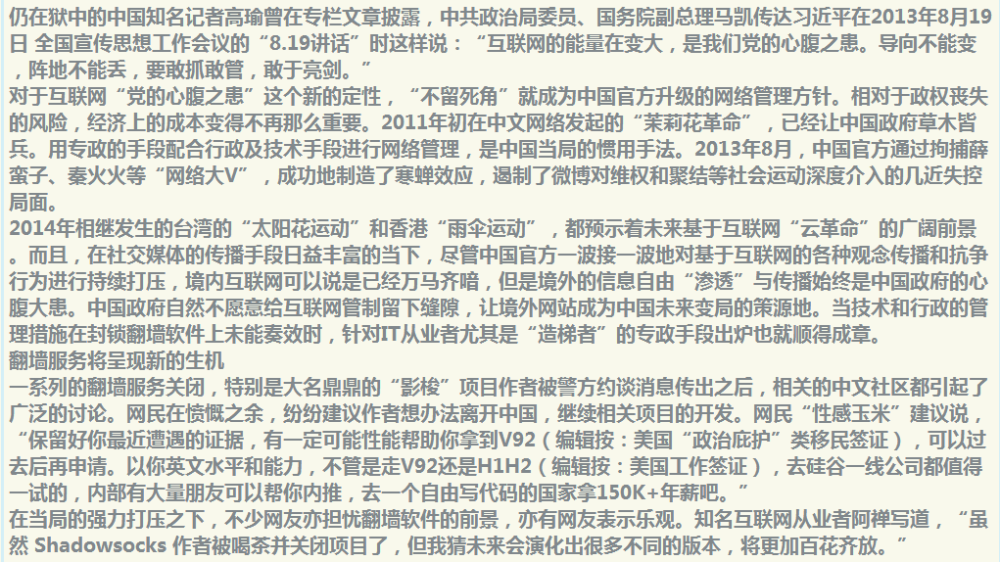
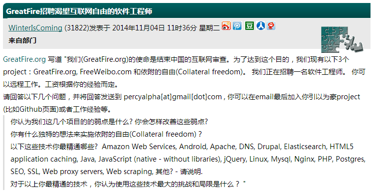

3关于自由
有一些想法留在这里 还有一些重要的链接
希望以后能造个铜像
列宁的雕像
想起之前的一张图
视频在这里
云革命
"2014年相继发生的台湾"太阳花学运"和香港"雨伞运动"
都预示着未来基于互联网"云革命"的广阔前景"
The shadow of the tunnel

每天穿梭在SS的隧道中 感觉像生活在加沙 他们用隧道来获取食物和信息
感谢自由女神的国度
Umbrella Movemen

GreatFire
依附的自由

生活在透明的国度

遗失的安全感
关于GitHub Education

Thanks for submitting ! 等待审核通过, 然后申请DO的100美刀优惠
关于阿里云云翼计划

需要国际带宽 不考虑了
一个新的思路

没有比这个更好的了
相关链接
记录 ipv6
http://speedtest-nyc3.digitalocean.com/ 满速 45.55.79.255 http://speedtest.hkg02.softlayer.com/downloads/test100.zip download

bandwagon出口带宽不错 从OC NYC3服务器wget test文件 达到29.5MB/s 国内电信出口被限制的太厉害

使用了赛尔新科技的六年级(ipv4 to ipv6) 走的hk线路 延迟较低 Password: 1h0H0z6Yus password: 8kFaNl85r3
PTR Records (Reverse DNS) 104.224.139.55 record not set set new record 2607:8700:103:625a:: record not set set new record 2607:8700:103:625a:58c8:6492:3c8d:2ea6 record not set set new record 2607:8700:103:625a:: google-public-dns-a.google.com
关于生活

生活并没有变得更好